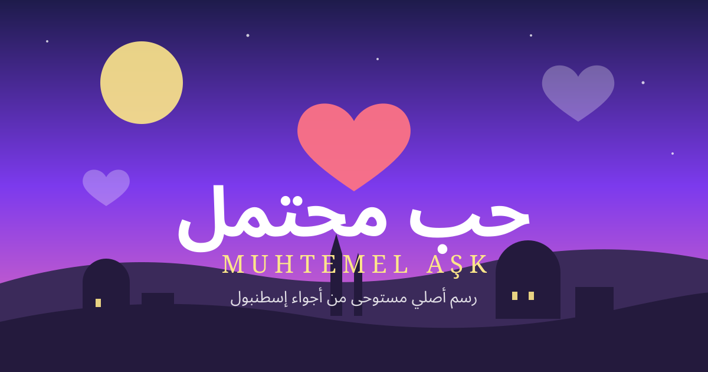

حب محتمل (Muhtemel Aşk): كوميديا رومانسية تركية جديدة على Show TV
ما هو المسلسل؟
«حب محتمل» (بالتركية: Muhtemel Aşk، وعنوانه الدولي Love Probably) مسلسل تلفزيوني تركي يجمع بين الدراما والرومانسية والكوميديا، من إنتاج شركة MF Yapım، وقد عُرضت حلقته الأولى على قناة Show TV في 18 يونيو 2026. يُبث مساء كل خميس في الثامنة بتوقيت تركيا، وتتراوح مدة الحلقة الواحدة بين 130 و145 دقيقة، وهي مدة معتادة في الدراما التركية الحديثة. ما زال العمل مستمراً في موسمه الأول، وقد تجاوز عشرين حلقة حتى منتصف نوفمبر 2026، مع توقف قصير لأسبوع واحد بمناسبة عيد الجمهورية التركي في 29 أكتوبر. أما موقع التصوير فهو مدينة إسطنبول، التي تظهر بأجوائها الحديثة إطاراً لقصة الحب.
وصف موقع Habertürk التركي العمل بأنه حكاية منسوجة من الحب والمصادفات واللقاءات المفاجئة، وأن إعلاناته التشويقية الأولى لفتت الانتباه سريعاً بأجوائها المليئة بالطاقة ومشاهدها الملونة وشخصياتها المرحة، حتى قبل بدء العرض.
القصة
بحسب الملخص الرسمي لشركة الإنتاج، تدور الحكاية حول دفنة، امرأة في الثلاثينيات من عمرها صعدت سلّم النجاح المهني بجهدها الخاص. لطالما بنت دفنة حياتها على أقدامها، تماماً كما علّمتها أمها، فهي قوية ورصينة ولا تتخلى عن نظام حياتها المعتاد. وذات يوم تدرك دفنة مدى إرهاقها ووحدتها، وأنه ربما حان الوقت، لأول مرة في حياتها، لتقع في الحب حقاً.
وتضيف الإعلانات التشويقية التي نقلها Habertürk تفاصيل أوضح عن البداية: دفنة محاصرة بضغوط عائلتها التي تريد تزويجها، وحين تتعرف إلى طولغا تأخذ حياتها منحى مختلفاً تماماً، وسرعان ما يلفت اهتمام طولغا بها أنظار المحيطين بهما. وفي وقت لاحق، وبينما تذهب دفنة لدعم صديقة لها في أحد اللقاءات، تصادف قادير هناك. وقادير لا يشبه أي رجل عرفته من قبل، فتجد دفنة نفسها دون أن تتوقع في دوامة انجذاب لم تحسب لها حساباً.
وهكذا يبني المسلسل صراعه على محورين: موقف قادير المباشر والصادم من جهة، وألاعيب طولغا التي تغيّر التوازنات من جهة أخرى. وبين الاثنين، لن يعود أي شيء كما كان من قبل بالنسبة إلى دفنة. سوء الفهم والغيرة والتحديات والانجذاب الذي يزداد قوة كلما هربت منه؛ كل ذلك يضع المشاهد في قلب قصة حب عاطفية تدور حول سؤال الإعلان التشويقي نفسه: في أي احتمال يختبئ الحب؟ وتعلق دفنة بين قلبها وعقلها في حكاية مليئة بالمفاجآت.
من الفكرة إلى الشاشة
تحرك مشروع المسلسل بسرعة خلال أسابيع قليلة. ففي منتصف مايو 2026 تناولت الصحافة التركية اختيار الأبطال، إذ ذكرت الصحفية المتخصصة بيرسن ألتونتاش أن آيشا آيشين توران ستكون بطلة العمل، وأكدت تقارير أخرى مشاركة إيكين كوتش وفياز شريف أوغلو في البطولة. وفي الثاني من يونيو 2026 ظهر الإعلان التشويقي الأول، ثم جرى الإعلان عن موعد بدء العرض في الثامن من يونيو، لينطلق المسلسل رسمياً في 18 يونيو على Show TV. وبهذا الإيقاع السريع، من التوقيع مع النجوم إلى الشاشة في نحو شهر، دخل العمل سباق المسلسلات الصيفية لعام 2026.
الأبطال والشخصيات
يتقاسم البطولة ثلاثة نجوم: إيكين كوتش في دور قادير أمينداغ، وآيشا آيشين توران في دور دفنة ديرين أمينداغ، وفياز شريف أوغلو في دور طولغا أرز. وهذا الثلاثي هو محور المسلسل وصراعه العاطفي.
وفي الأدوار المساعدة تظهر قائمة طويلة من الممثلين والشخصيات، منهم: كانسل إلجين في دور ليفنت بارتينار، وإيفريم دوغان في دور مينة، وهايال كوسيوغلو في دور مليس، وإركال إيجه في دور ييغيت إردم، وموغه بايرام أوغلو في دور أوزلم بارتينار، وميليس مينكاري في دور زينب أمينداغ، وبهتيار مميلي في دور سليم كارتال، وأوزغور بربر في دور أوغوز ديرين، ويونجا شاهين باش في دور سلمى أمينداغ، وسيلين دوماتش في دور سوزان بويراز منذ الحلقة الأولى. كما انضمت ليلى فراي إلى العمل بدور قادر أمينداغ ابتداء من الحلقة التاسعة عشرة. وبهذا التعدد في العائلات والشخصيات، من أمينداغ إلى بارتينار إلى ديرين، تتسع خيوط القصة خارج مثلث الحب الأساسي.
فريق العمل
أخرج المسلسل ألطان دونمز وأوركون تشاتاك، وكتب السيناريو عائشة أونر كوتلو وإلتشين مسلو، انطلاقاً من قصة أصلية لإليف غامزة أرسلان ودريا كارا. وخلال الموسم تعاقبت أقلام أخرى على كتابة الحلقات: فقد شاركت أيشن غونسو تيكر وفكرت بكلر في الحلقات من الرابعة إلى السادسة، ثم انضمت سو كورور إلى فريق الكتابة ابتداء من الحلقة السابعة. المنتجة هي أسنة بولبول أوغلو، ومدير التصوير هاكان غنجان.
وتولى الموسيقى ثلاثة ملحنين هم إندر غوندوزلي ومتين أريغول وجان سانبللي، وكتب غوندوزلي موسيقى الشارة الافتتاحية ومقطوعة تحمل اسم البطل «قادير أمينداغ».
الموسيقى والأغاني
حضرت الأغاني التركية المعروفة بقوة في حلقات المسلسل. فمن أبرز ما ورد في قائمة الموسيقى التصويرية أغنية «Git» (اذهب) للمطربة الكبيرة سيزان أقسو، وأغنية «Pırlanta» (ألماسة) لنيل كارا إبراهيم غيل، و«Kara Gözlüm» لمليكة شاهين، و«Mavişim» لإيدو تاتلي سس.
واللافت أن نجمي العمل غنّيا بأنفسهما: فأدّى إيكين كوتش أغنية «Nankör Kedi» (القط الناكر للجميل)، وشارك فياز شريف أوغلو في أداء أغنية «Papatya» (الأقحوانة) مع بارش جيهون كوتش وإمره إردمير. وهذا يمنح العمل نكهة غنائية خاصة تتجاوز الاستعانة بأصوات جاهزة.
مسيرة المشاهدة والتقييمات
انطلق المسلسل انطلاقة متواضعة نسبياً؛ فقد حققت الحلقة الأولى 2.88 نقطة في فئة المشاهدة الإجمالية (TOTAL) وحلّت في المركز السادس ليلة عرضها. لكن الحلقة الثانية قفزت بالعمل إلى الصدارة بنسبة 4.51 ومركز أول، وكانت حلقات الصيف الأولى هي الأقوى، إذ بلغت الحلقة الثالثة 4.69 نقطة وظل المسلسل في المركزين الأول والثاني خلال يوليو وأغسطس.
ومع دخول الخريف ومنافسة أعمال الموسم الجديد، تراجعت الأرقام تدريجياً لتستقر حول نقطتين في فئة المشاهدة الإجمالية بحلول أكتوبر ونوفمبر 2026، مع تذبذب بين حلقة وأخرى، وتوقف أسبوع واحد لعيد الجمهورية. ورغم التراجع، واصلت القناة عرض المسلسل في موعده الأسبوعي واستمرت إعلانات حلقاته الجديدة، ما يعكس ثقة الإنتاج بالقصة وجمهورها. وهذه المسيرة، بداية قوية في الصيف ثم هدوء في الخريف، نمط شائع في المسلسلات التركية الصيفية التي تدخل منافسة الموسم الشتوي المزدحم.
عن شركة الإنتاج
تعد MF Yapım من الشركات التركية المعروفة في أعمال الحب والكوميديا الرومانسية. ومن إنتاجاتها السابقة المدرجة على موقعها الرسمي مسلسلات «أنت تطرق بابي» (Sen Çal Kapımı)، و«الحالة الاجتماعية: مختلطة»، و«الحالة الاجتماعية: متزوج»، و«ربيع» (Bahar)، و«الأب هو الحياة». ويأتي «حب محتمل» امتداداً لهذا الخط الذي جمع بين الحب والكوميديا ومواقف الحياة اليومية.
دفنة ديرين أمينداغ
دفنة هي قلب الحكاية ومركزها: امرأة في الثلاثينيات من عمرها صعدت درجات النجاح المهني بجهدها الخاص، ولم تنتظر أن يمهد لها أحد الطريق. بنت حياتها واقفة على قدميها كما علمتها أمها، فصارت قوية ورصينة ولا تتخلى عن نظام حياتها المعتاد مهما كانت الإغراءات.
لكن ذات يوم، تدرك دفنة مدى إرهاقها ووحدتها، وأن كل هذا النجاح لم يملأ الفراغ الذي تتركه الوحدة في القلب. ومن هنا يبدأ التحول: ربما حان الوقت، لأول مرة في حياتها، لتقع في الحب حقاً، بحسب الملخص الرسمي لشركة الإنتاج.
قادير أمينداغ
قادير (إيكين كوتش) هو الرجل الذي لا يشبه أي رجل عرفته دفنة من قبل؛ موقفه مباشر وصادم، لا يجامل ولا يلتف حول الحقيقة، وحضوره في حياة دفنة يقلب حساباتها كلها. تصادفه وهي تذهب لدعم صديقة لها في أحد اللقاءات، فتجد نفسها في دوامة انجذاب لم تحسب لها حساباً.
وبشخصيته الصارمة المباشرة، يمثل قادير القطب الأول في مثلث الحب: الرجل الذي يواجه ولا يتلاعب، والذي يجبر دفنة على أن ترى نفسها وحياتها بعينين جديدتين.
طولغا أرز
طولغا (فياز شريف أوغلو) هو القطب الآخر: صاحب الألاعيب التي تغير التوازنات، والحضور الذي يلفت الأنظار منذ اللحظة الأولى. وحين تتعرف دفنة إليه تأخذ حياتها منحى مختلفاً تماماً، وسرعان ما يلفت اهتمامه بها أنظار المحيطين بهما.
بين أسلوب قادير المباشر وألاعيب طولغا المحسوبة، تجد دفنة نفسها في الوسط، تعلق بين قلبها وعقلها في حكاية مليئة بالمفاجآت، كما يصفها الإعلان التشويقي للعمل.
معادلة الحب الثلاثية
يبني المسلسل صراعه على سوء الفهم والغيرة والتحديات والانجذاب الذي يزداد قوة كلما هربت دفنة منه. وهي العناصر الأربعة التي تضع المشاهد في قلب قصة حب عاطفية تدور حول سؤال الإعلان التشويقي نفسه: في أي احتمال يختبئ الحب؟
وحول المثلث الأساسي تتحرك العائلات الكبرى في الحكاية، من عائلة أمينداغ إلى عائلة بارتينار إلى عائلة ديرين، بكل ما تحمله من أسرار وعلاقات، فتتسع خيوط القصة خارج الحب وحده إلى عالم كامل من التشابكات.
لماذا يستحق المتابعة؟
يجمع «حب محتمل» بين خفة الكوميديا الرومانسية وعمق الدراما الإنسانية: بطلة تشبه نساء كثيرات نجحن في كل شيء إلا في الاستماع إلى قلوبهن، ورجلان يمثلان طريقين مختلفين تماماً للحب، ومدينة اسطنبول بأجوائها الحديثة إطاراً للقصة.
ومع أغنيات تركية محبوبة تؤدي بعضها نجوم العمل بأنفسهم، وإيقاع عرض أسبوعي كل خميس على Show TV، يقدم المسلسل لعشاق النوع وجبة صيفية كاملة تمتد حلقاتها بين ساعتين وساعتين ونصف كعادة الإنتاجات التركية الكبرى.
ملاحظة عن المعلومات
المسلسل ما زال قيد العرض، لذلك قد تتغير الأرقام والتفاصيل مع الوقت، مثل عدد الحلقات والتقييمات وانضمام ممثلين جدد. والمعلومات الواردة هنا محدثة حتى منتصف نوفمبر 2026 بحسب المصادر المذكورة أدناه.
المصادر
- Vikipedi (التركية): Muhtemel Aşk
- الموقع الرسمي لشركة الإنتاج MF Yapım: حب محتمل
- Habertürk: قصة المسلسل وموعد عرضه (بالتركية)
الصورة في أعلى المقال غلاف أصلي مرسوم لهذا الموقع، وليست لقطة من المسلسل.
العودة إلى الرئيسية